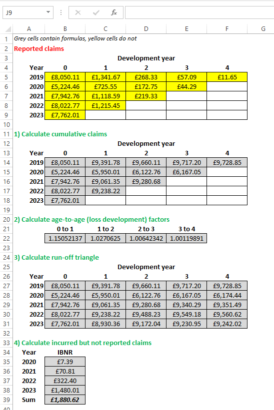

Chain-ladder method
This Excel spreadsheet (click here to download) contains a simple chain-ladder calculator. A screenshot of the spreadsheet is below. The chain-ladder method is used by insurers to forecast the amount of reserves required to cover future (incurred by not reported) claims.
